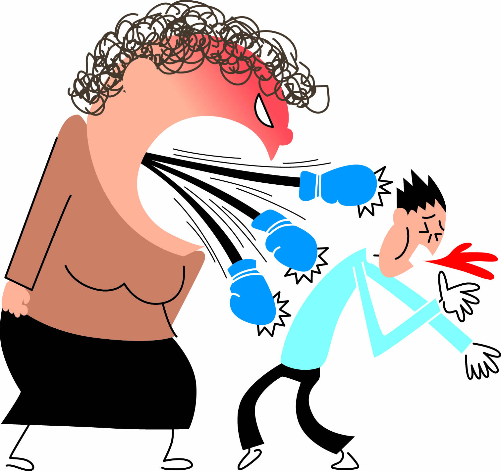

|
 |
|
| ¿Que es la violencia verbal? |
| El abuso verbal se produce cuando una persona critica o insulta a otra persona. Es una forma destructiva de comunicación destinada a dañar el concepto de sí mismo de la otra persona y producir en ella emociones negativas. |  |
| Consecuencias de la violencia verbal |
| Podría tener una pobre red de apoyo. Consecuencias en la vida escolar: Desmotivación, desinterés y falta de atención en las clases, bajo rendimiento académico, deserción escolar, puede presentar rechazo hacia su centro educativo. |  |
| Tipos de violencia verbal |
|  | Bloquear, Desviar, Acusar, Culpar, Juzgar, Criticar, Trivializar, Socavar, Amenazar, Insultar, Olvidar, Ordenar, Negar, Actuar con ira, Abuso verbal, Violencia doméstica. |
| ¿Como evitar la violencia verbal? |
| La comunicación asertiva y, en general, las habilidades de comunicación reducen el riesgo de conflicto y de violencia verbal. La autoestima, la empatía, la preocupación por los demás o la capacidad para gestionar los conflictos de manera constructiva contribuyen a reducir el riesgo de ejercer violencia verbal. |  |
| Video de violencia verbal |
|